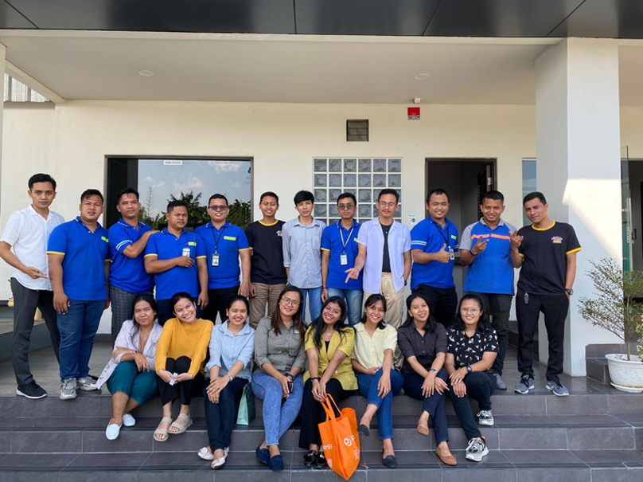
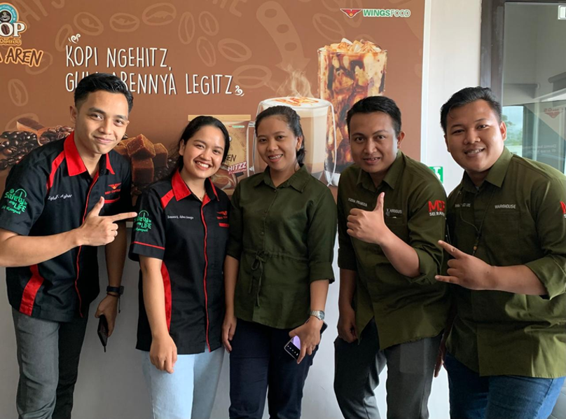
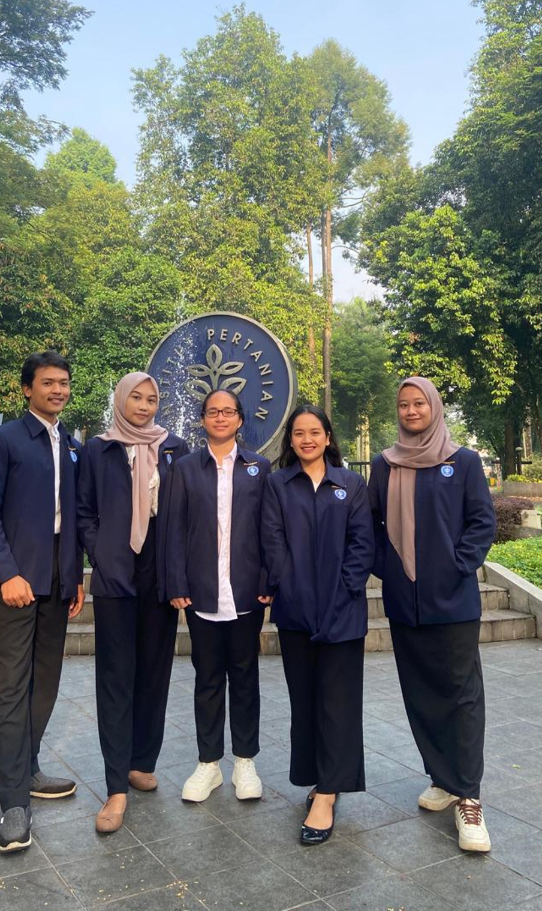

To advance sustainable agriculture through research, innovation, and data-driven solutions.



Focused on crop production, agricultural systems, and basic research methodologies.
Focused on seed quality, data analysis, and research in agricultural systems.
Data Analysis
Research
Scientific Reporting
Statistical Analysis
Strong background in data analysis, research, and agricultural systems. Able to work both independently and in teams, with strong attention to detail and accuracy. Capable of managing tasks efficiently and adapting to both field and laboratory environments.